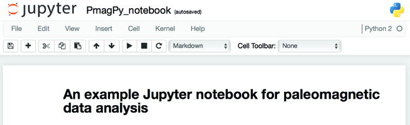
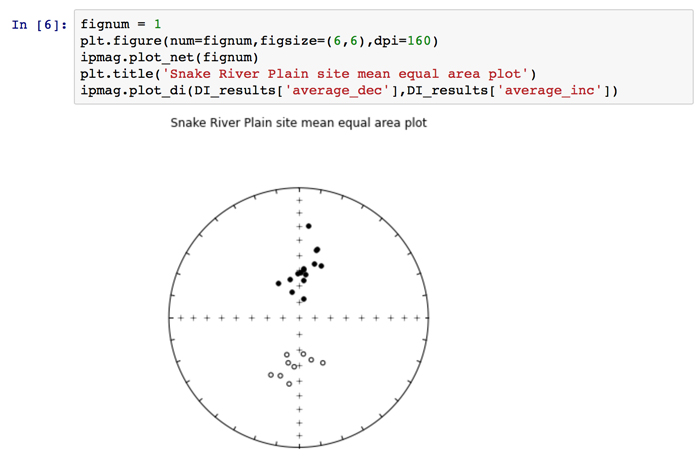

Jupyter Notebooks
Jupyter Notebooks#
Data analysis in Python benefits from an increasingly robust ecosystem of packages for scientific computing and plotting. The Jupyter notebook is one such tool. It has gained widespread use for conducting and presenting data analysis. Jupyter builds on the IPython project which began as a way to bring increased interactivity to data analysis in Python :raw-latex:`\citep{perez07}` and has evolved to include an interactive notebook environment that seeks to enable the full trajectory of scientific computing from initial analysis and visualization, to collaboration, and through to publication. The project has expanded to enable a reproducible interactive computing environment for many other programming languages (such as R and Julia) and the language-agnostic parts of its architecture are known as Project Jupyter (http://jupyter.org). Jupyter notebooks allow for executable code, results, text and graphical output to coherently coexist in a single document. With these combined components, they are excellent tools both for conducting data analysis and presenting results.
To show some of what is possible in terms of data analysis using PmagPy in a notebook environment, we have created example notebooks that illustrate project workflows as well as notebooks that document many different PmagPy functions.
that are available for download from this repository: https://github.com/PmagPy/2016_Tauxe-et-al_PmagPy_Notebooks. These notebooks can also be viewed as static webpages here: http://pmagpy.github.io/Example_PmagPy_Notebook.html and http://pmagpy.github.io/Additional_PmagPy_Examples.html.
The main example notebook (Example_PmagPy_Notebook.ipynb) combines data from two different studies for the sake of developing a mean paleomagnetic pole from the upper portion of a sequence of volcanics in the North American Midcontinent Rift :raw-latex:`\citep{halls74, swansonhysell14}`. The two data files used within the notebook can be downloaded from the MagIC database. The digital object identifier (doi) search option allows for the data files to be readily located as https://earthref.org/MagIC/doi/10.1139/e74-113/ and https://earthref.org/MagIC/doi/10.1002/2013GC005180/. Downloading these data files from the database and putting them into folders within a local ‘Project Directory’ allows them to be accessed within the Jupyter notebook.
Within the example notebook, these data are unpacked into their respective MagIC formatted tab delimited data files. The data are then loaded into dataframes and filtered using several different criteria (stratigraphic height and polarity). Several functions from the ipmag module are used for making equal area projections and calculating statistics. In addition to combining the data sets to calculate the mean pole, the code in the notebook conducts a bootstrap fold test on the data using the approach of :raw-latex:`\cite{tauxe94}` as well as a common mean test. The data recombinations and calculations done in this notebook are examples of portions of the data analysis workflow which are often difficult to document and reproduce. The examples illustrate a small sliver of the potential for the use of notebooks for data manipulation and analysis of paleomagnetic data. Additional functionality available within PmagPy is demonstrated within the additional PmagPy examples notebook (Additional_PmagPy_Examples.ipynb) as small vignettes of example code. Functions related to paleomagnetic and rock magnetic data analysis are shown as examples. The notebook also illustrates some of the interactivity that can be built into the notebook utilizing IPython widgets.
If you want to to run the example notebook interactively, you’ll need to follow these steps:
Open your command line
Clone the notebook repository:
git clone https://github.com/PmagPy/2016_Tauxe-et-al_PmagPy_Notebooks cd 2016_Tauxe-et-al_PmagPy_Notebooks jupyter notebook
This will open up a local IPython server in your default web browser. Click on Example_PmagPy_notebook.ipynb to open and edit the main example notebook. You will see something like this:
{kind=link}
Notebooks are constructed as a series of ‘cells’ which can be text or code. To view the ‘source’ of a text cell, just click on it. To render it, click on the ‘run’ button (sideways triangle on the toolbar). Similarly, to run the code in a code cell, click on the cell and then the ‘run’ button (or use the shift+enter short cut). To execute the entire notebook, click on the ‘Cell’ button and choose ’Run All’.
Now you are ready to look at some data. In the code block under the heading ‘Reading data from MagIC format results files’, data are read in from a file downloaded and unpacked from the MagIC database. The notebook shows how to read in the data into a pandas DataFrame, and plot the directions on an equal area projection:
{kind=link}
There are several other tricks shown off in the notebook, which should be enough to get you started using ipmag in a Python notebook environment. Conducting data analysis using PmagPy in a notebook allows for the underlying code of statistical tests to be available and for the decisions made in the specific implementation of such tests to be transparently presented.
Although there is much much more to do in Python, this documentation is aimed at getting and using PmagPy, so that’s it for this chapter. Congratulations if you made it to the end!